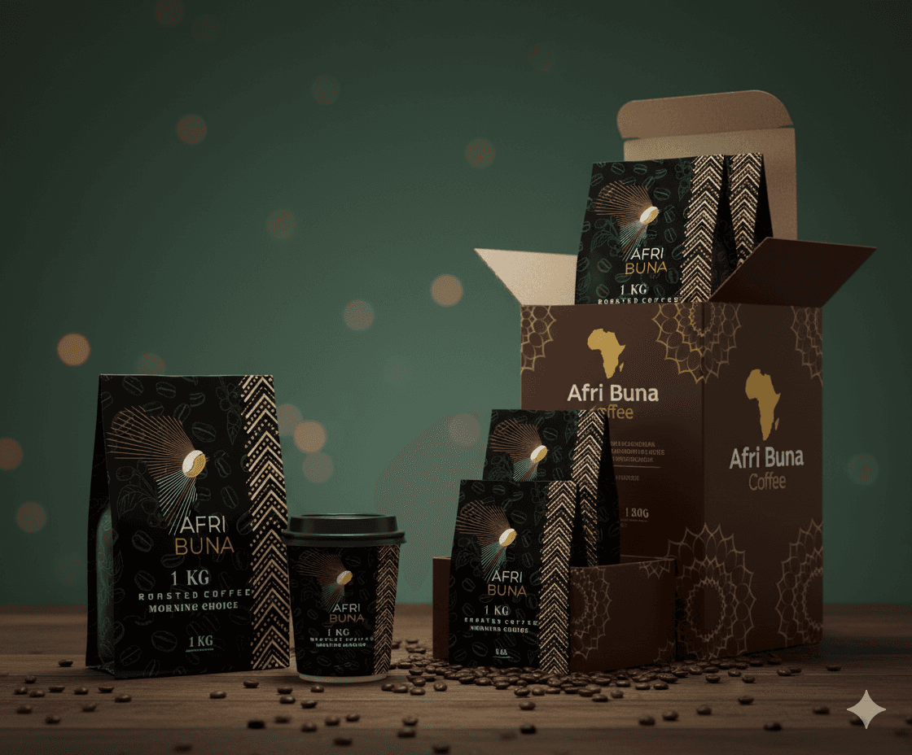
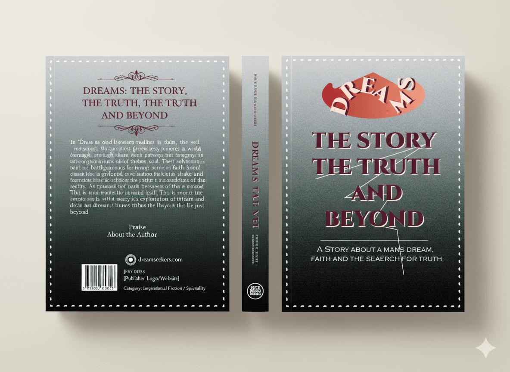

Portfolio
Told from the ground up.
Every project is one story, told the same way: the real constraint, the calls I made, and what actually shipped. Read straight through, or filter by discipline.
The work
Browse by discipline.
Each project has its own page — the client's ask, the calls I made and why, and what shipped. Use the filter to narrow the grid, or just scroll.
 Web Design
Travel platform · Framer
Web Design
Travel platform · FramerETtravel Travel Agency
Turn a mountain of destination information into a booking experience that invites instead of exhausts.
20256 pages + blogRead the case study UI / UX Design
Photography portfolio · Framer
UI / UX Design
Photography portfolio · FramerJohn’s Photography Portfolio
Show two capabilities at once — professional photography and modern web design — without letting either compete for attention.
20255 pagesRead the case study Web Design
Interior design studio · Framer
Web Design
Interior design studio · FramerJoyInterior
Present high-end interiors and a furniture line with the same restraint and quality as the spaces themselves.
20254 pagesRead the case study Web Design
Real estate platform · Framer
Web Design
Real estate platform · FramerGwarinpa Real Estate
Give a luxury property brand a stage that still lets visitors find, understand and enquire about listings fast.
20255 pagesRead the case study Web Design
Arts institution · Framer
Web Design
Arts institution · FramerMuseum of Art in Addis
Give a cultural institution its first real digital presence — one that could grow without losing its voice.
20254 pagesRead the case study UI / UX Design
Reading app · web, desktop & mobile
UI / UX Design
Reading app · web, desktop & mobileBible Reading App
Make a long, dense text feel calm, legible and worth returning to every day.
2025Phone · desktop · webArchiveView the design
Branding Brand & packagingAfri Buna Coffee Packaging
Packaging that reads at shelf distance and builds a coffee brand from scratch.
2024Identity · pack · guidelinesArchiveView the design
Graphic Design Editorial · cover seriesDream, Faith, Journey
Three covers, one visual family — making an abstract concept feel hopeful and grounded.
20243 covers · systemArchiveView the designStart a project
Tell me what you are building.
Send the shape of the idea: the audience, the constraint, the deadline you are working to. You get a reply within one working day, and a written scope before any work starts.
- yohannesassefa17@gmail.com
- +251 92 124 4796
- Addis Ababa, Ethiopia · GMT+3